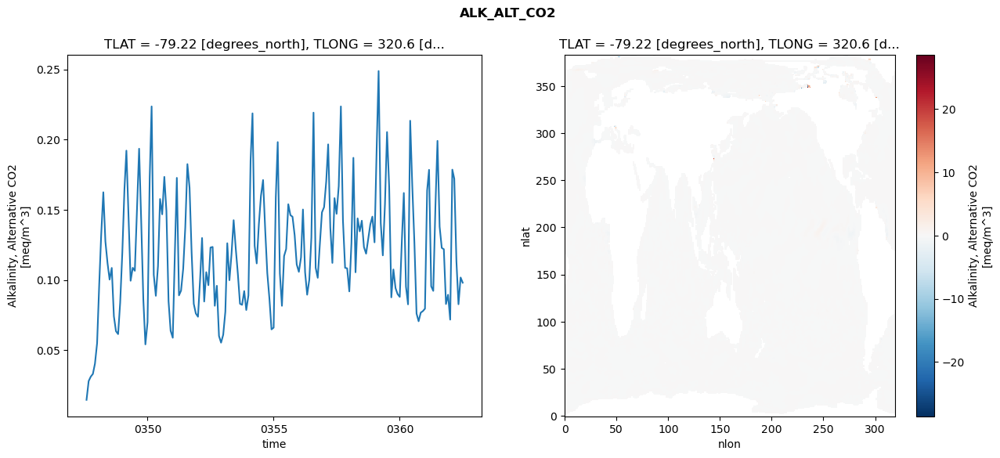
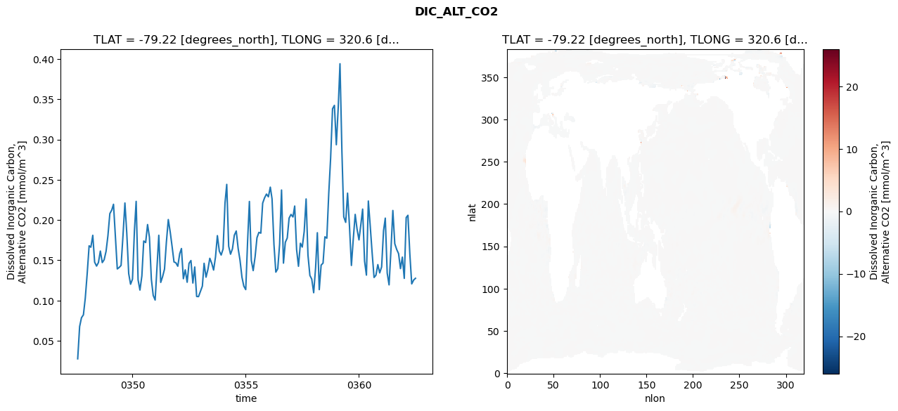
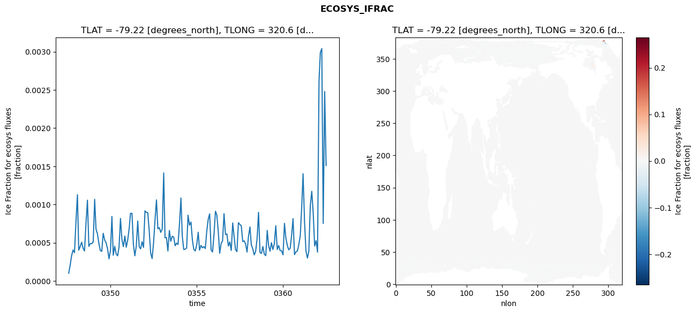
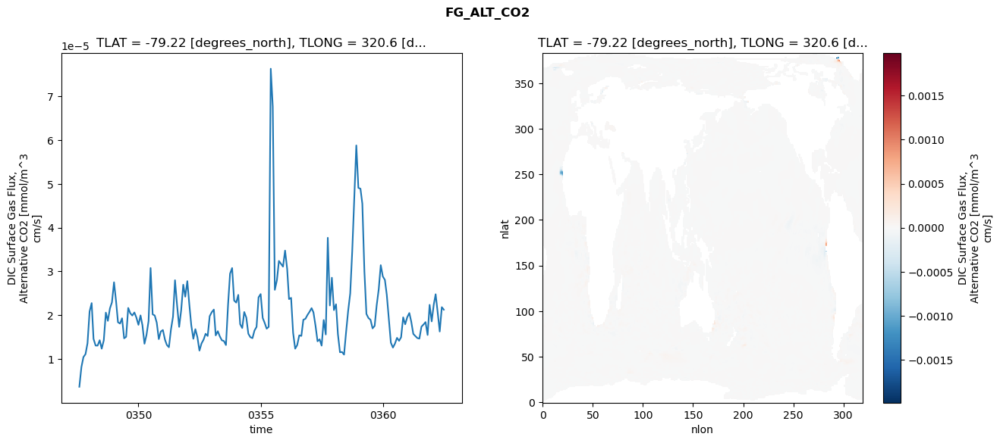

glb-dor_North_Atlantic_basin_018_1999-07-01_00074#
Simulation details#
Case: smyle.cdr-atlas-v0.glb-dor_North_Atlantic_basin_018_1999-07-01_00074.001
Basin: North_Atlantic_basin
Polygon: 18.0
Start date: 1999-07
Show code cell source Hide code cell source
import xarray as xr
import matplotlib.pyplot as plt
Show code cell source Hide code cell source
zarr_store = "/path/to/zarr/store"
# Parameters
zarr_store = "/global/cfs/projectdirs/m4746/Projects/Ocean-CDR-Atlas-v0/data/validation/smyle.cdr-atlas-v0.glb-dor_North_Atlantic_basin_018_1999-07-01_00074.001.validation.zarr"
Show code cell source Hide code cell source
%%time
ds_o = xr.open_zarr(zarr_store).compute()
ds_o
CPU times: user 614 ms, sys: 494 ms, total: 1.11 s
Wall time: 1.27 s
<xarray.Dataset> Size: 2MB
Dimensions: (nlat: 384, nlon: 320, time: 180)
Coordinates:
TLAT float64 8B -79.22
TLONG float64 8B 320.6
ULAT float64 8B -78.95
ULONG float64 8B 321.1
* time (time) object 1kB 0347-08-01 00:00:00 ... 0362-07-01 0...
z_t float32 4B 500.0
Dimensions without coordinates: nlat, nlon
Data variables:
ALK_ALT_CO2_diff (nlat, nlon) float32 492kB nan nan nan ... nan nan nan
ALK_ALT_CO2_rmse (time) float64 1kB 0.01461 0.02799 ... 0.1017 0.09804
DIC_ALT_CO2_diff (nlat, nlon) float32 492kB nan nan nan ... nan nan nan
DIC_ALT_CO2_rmse (time) float64 1kB 0.02755 0.06768 ... 0.1255 0.1276
ECOSYS_IFRAC_diff (nlat, nlon) float32 492kB nan nan nan ... nan nan nan
ECOSYS_IFRAC_rmse (time) float64 1kB 0.0001005 0.0002077 ... 0.00151
FG_ALT_CO2_diff (nlat, nlon) float32 492kB nan nan nan ... nan nan nan
FG_ALT_CO2_rmse (time) float64 1kB 3.665e-06 8.157e-06 ... 2.126e-05xarray.Dataset
- nlat: 384
- nlon: 320
- time: 180
- TLAT()float64-79.22
- long_name :
- array of t-grid latitudes
- units :
- degrees_north
array(-79.22052261)
- TLONG()float64320.6
- long_name :
- array of t-grid longitudes
- units :
- degrees_east
array(320.56250892)
- ULAT()float64-78.95
- long_name :
- array of u-grid latitudes
- units :
- degrees_north
array(-78.95289509)
- ULONG()float64321.1
- long_name :
- array of u-grid longitudes
- units :
- degrees_east
array(321.12500894)
- time(time)object0347-08-01 00:00:00 ... 0362-07-...
- bounds :
- time_bound
- long_name :
- time
array([cftime.DatetimeNoLeap(347, 8, 1, 0, 0, 0, 0, has_year_zero=True), cftime.DatetimeNoLeap(347, 9, 1, 0, 0, 0, 0, has_year_zero=True), cftime.DatetimeNoLeap(347, 10, 1, 0, 0, 0, 0, has_year_zero=True), cftime.DatetimeNoLeap(347, 11, 1, 0, 0, 0, 0, has_year_zero=True), cftime.DatetimeNoLeap(347, 12, 1, 0, 0, 0, 0, has_year_zero=True), cftime.DatetimeNoLeap(348, 1, 1, 0, 0, 0, 0, has_year_zero=True), cftime.DatetimeNoLeap(348, 2, 1, 0, 0, 0, 0, has_year_zero=True), cftime.DatetimeNoLeap(348, 3, 1, 0, 0, 0, 0, has_year_zero=True), cftime.DatetimeNoLeap(348, 4, 1, 0, 0, 0, 0, has_year_zero=True), cftime.DatetimeNoLeap(348, 5, 1, 0, 0, 0, 0, has_year_zero=True), cftime.DatetimeNoLeap(348, 6, 1, 0, 0, 0, 0, has_year_zero=True), cftime.DatetimeNoLeap(348, 7, 1, 0, 0, 0, 0, has_year_zero=True), cftime.DatetimeNoLeap(348, 8, 1, 0, 0, 0, 0, has_year_zero=True), cftime.DatetimeNoLeap(348, 9, 1, 0, 0, 0, 0, has_year_zero=True), cftime.DatetimeNoLeap(348, 10, 1, 0, 0, 0, 0, has_year_zero=True), cftime.DatetimeNoLeap(348, 11, 1, 0, 0, 0, 0, has_year_zero=True), cftime.DatetimeNoLeap(348, 12, 1, 0, 0, 0, 0, has_year_zero=True), cftime.DatetimeNoLeap(349, 1, 1, 0, 0, 0, 0, has_year_zero=True), cftime.DatetimeNoLeap(349, 2, 1, 0, 0, 0, 0, has_year_zero=True), cftime.DatetimeNoLeap(349, 3, 1, 0, 0, 0, 0, has_year_zero=True), cftime.DatetimeNoLeap(349, 4, 1, 0, 0, 0, 0, has_year_zero=True), cftime.DatetimeNoLeap(349, 5, 1, 0, 0, 0, 0, has_year_zero=True), cftime.DatetimeNoLeap(349, 6, 1, 0, 0, 0, 0, has_year_zero=True), cftime.DatetimeNoLeap(349, 7, 1, 0, 0, 0, 0, has_year_zero=True), cftime.DatetimeNoLeap(349, 8, 1, 0, 0, 0, 0, has_year_zero=True), cftime.DatetimeNoLeap(349, 9, 1, 0, 0, 0, 0, has_year_zero=True), cftime.DatetimeNoLeap(349, 10, 1, 0, 0, 0, 0, has_year_zero=True), cftime.DatetimeNoLeap(349, 11, 1, 0, 0, 0, 0, has_year_zero=True), cftime.DatetimeNoLeap(349, 12, 1, 0, 0, 0, 0, has_year_zero=True), cftime.DatetimeNoLeap(350, 1, 1, 0, 0, 0, 0, has_year_zero=True), cftime.DatetimeNoLeap(350, 2, 1, 0, 0, 0, 0, has_year_zero=True), cftime.DatetimeNoLeap(350, 3, 1, 0, 0, 0, 0, has_year_zero=True), cftime.DatetimeNoLeap(350, 4, 1, 0, 0, 0, 0, has_year_zero=True), cftime.DatetimeNoLeap(350, 5, 1, 0, 0, 0, 0, has_year_zero=True), cftime.DatetimeNoLeap(350, 6, 1, 0, 0, 0, 0, has_year_zero=True), cftime.DatetimeNoLeap(350, 7, 1, 0, 0, 0, 0, has_year_zero=True), cftime.DatetimeNoLeap(350, 8, 1, 0, 0, 0, 0, has_year_zero=True), cftime.DatetimeNoLeap(350, 9, 1, 0, 0, 0, 0, has_year_zero=True), cftime.DatetimeNoLeap(350, 10, 1, 0, 0, 0, 0, has_year_zero=True), cftime.DatetimeNoLeap(350, 11, 1, 0, 0, 0, 0, has_year_zero=True), cftime.DatetimeNoLeap(350, 12, 1, 0, 0, 0, 0, has_year_zero=True), cftime.DatetimeNoLeap(351, 1, 1, 0, 0, 0, 0, has_year_zero=True), cftime.DatetimeNoLeap(351, 2, 1, 0, 0, 0, 0, has_year_zero=True), cftime.DatetimeNoLeap(351, 3, 1, 0, 0, 0, 0, has_year_zero=True), cftime.DatetimeNoLeap(351, 4, 1, 0, 0, 0, 0, has_year_zero=True), cftime.DatetimeNoLeap(351, 5, 1, 0, 0, 0, 0, has_year_zero=True), cftime.DatetimeNoLeap(351, 6, 1, 0, 0, 0, 0, has_year_zero=True), cftime.DatetimeNoLeap(351, 7, 1, 0, 0, 0, 0, has_year_zero=True), cftime.DatetimeNoLeap(351, 8, 1, 0, 0, 0, 0, has_year_zero=True), cftime.DatetimeNoLeap(351, 9, 1, 0, 0, 0, 0, has_year_zero=True), cftime.DatetimeNoLeap(351, 10, 1, 0, 0, 0, 0, has_year_zero=True), cftime.DatetimeNoLeap(351, 11, 1, 0, 0, 0, 0, has_year_zero=True), cftime.DatetimeNoLeap(351, 12, 1, 0, 0, 0, 0, has_year_zero=True), cftime.DatetimeNoLeap(352, 1, 1, 0, 0, 0, 0, has_year_zero=True), cftime.DatetimeNoLeap(352, 2, 1, 0, 0, 0, 0, has_year_zero=True), cftime.DatetimeNoLeap(352, 3, 1, 0, 0, 0, 0, has_year_zero=True), cftime.DatetimeNoLeap(352, 4, 1, 0, 0, 0, 0, has_year_zero=True), cftime.DatetimeNoLeap(352, 5, 1, 0, 0, 0, 0, has_year_zero=True), cftime.DatetimeNoLeap(352, 6, 1, 0, 0, 0, 0, has_year_zero=True), cftime.DatetimeNoLeap(352, 7, 1, 0, 0, 0, 0, has_year_zero=True), cftime.DatetimeNoLeap(352, 8, 1, 0, 0, 0, 0, has_year_zero=True), cftime.DatetimeNoLeap(352, 9, 1, 0, 0, 0, 0, has_year_zero=True), cftime.DatetimeNoLeap(352, 10, 1, 0, 0, 0, 0, has_year_zero=True), cftime.DatetimeNoLeap(352, 11, 1, 0, 0, 0, 0, has_year_zero=True), cftime.DatetimeNoLeap(352, 12, 1, 0, 0, 0, 0, has_year_zero=True), cftime.DatetimeNoLeap(353, 1, 1, 0, 0, 0, 0, has_year_zero=True), cftime.DatetimeNoLeap(353, 2, 1, 0, 0, 0, 0, has_year_zero=True), cftime.DatetimeNoLeap(353, 3, 1, 0, 0, 0, 0, has_year_zero=True), cftime.DatetimeNoLeap(353, 4, 1, 0, 0, 0, 0, has_year_zero=True), cftime.DatetimeNoLeap(353, 5, 1, 0, 0, 0, 0, has_year_zero=True), cftime.DatetimeNoLeap(353, 6, 1, 0, 0, 0, 0, has_year_zero=True), cftime.DatetimeNoLeap(353, 7, 1, 0, 0, 0, 0, has_year_zero=True), cftime.DatetimeNoLeap(353, 8, 1, 0, 0, 0, 0, has_year_zero=True), cftime.DatetimeNoLeap(353, 9, 1, 0, 0, 0, 0, has_year_zero=True), cftime.DatetimeNoLeap(353, 10, 1, 0, 0, 0, 0, has_year_zero=True), cftime.DatetimeNoLeap(353, 11, 1, 0, 0, 0, 0, has_year_zero=True), cftime.DatetimeNoLeap(353, 12, 1, 0, 0, 0, 0, has_year_zero=True), cftime.DatetimeNoLeap(354, 1, 1, 0, 0, 0, 0, has_year_zero=True), cftime.DatetimeNoLeap(354, 2, 1, 0, 0, 0, 0, has_year_zero=True), cftime.DatetimeNoLeap(354, 3, 1, 0, 0, 0, 0, has_year_zero=True), cftime.DatetimeNoLeap(354, 4, 1, 0, 0, 0, 0, has_year_zero=True), cftime.DatetimeNoLeap(354, 5, 1, 0, 0, 0, 0, has_year_zero=True), cftime.DatetimeNoLeap(354, 6, 1, 0, 0, 0, 0, has_year_zero=True), cftime.DatetimeNoLeap(354, 7, 1, 0, 0, 0, 0, has_year_zero=True), cftime.DatetimeNoLeap(354, 8, 1, 0, 0, 0, 0, has_year_zero=True), cftime.DatetimeNoLeap(354, 9, 1, 0, 0, 0, 0, has_year_zero=True), cftime.DatetimeNoLeap(354, 10, 1, 0, 0, 0, 0, has_year_zero=True), cftime.DatetimeNoLeap(354, 11, 1, 0, 0, 0, 0, has_year_zero=True), cftime.DatetimeNoLeap(354, 12, 1, 0, 0, 0, 0, has_year_zero=True), cftime.DatetimeNoLeap(355, 1, 1, 0, 0, 0, 0, has_year_zero=True), cftime.DatetimeNoLeap(355, 2, 1, 0, 0, 0, 0, has_year_zero=True), cftime.DatetimeNoLeap(355, 3, 1, 0, 0, 0, 0, has_year_zero=True), cftime.DatetimeNoLeap(355, 4, 1, 0, 0, 0, 0, has_year_zero=True), cftime.DatetimeNoLeap(355, 5, 1, 0, 0, 0, 0, has_year_zero=True), cftime.DatetimeNoLeap(355, 6, 1, 0, 0, 0, 0, has_year_zero=True), cftime.DatetimeNoLeap(355, 7, 1, 0, 0, 0, 0, has_year_zero=True), cftime.DatetimeNoLeap(355, 8, 1, 0, 0, 0, 0, has_year_zero=True), cftime.DatetimeNoLeap(355, 9, 1, 0, 0, 0, 0, has_year_zero=True), cftime.DatetimeNoLeap(355, 10, 1, 0, 0, 0, 0, has_year_zero=True), cftime.DatetimeNoLeap(355, 11, 1, 0, 0, 0, 0, has_year_zero=True), cftime.DatetimeNoLeap(355, 12, 1, 0, 0, 0, 0, has_year_zero=True), cftime.DatetimeNoLeap(356, 1, 1, 0, 0, 0, 0, has_year_zero=True), cftime.DatetimeNoLeap(356, 2, 1, 0, 0, 0, 0, has_year_zero=True), cftime.DatetimeNoLeap(356, 3, 1, 0, 0, 0, 0, has_year_zero=True), cftime.DatetimeNoLeap(356, 4, 1, 0, 0, 0, 0, has_year_zero=True), cftime.DatetimeNoLeap(356, 5, 1, 0, 0, 0, 0, has_year_zero=True), cftime.DatetimeNoLeap(356, 6, 1, 0, 0, 0, 0, has_year_zero=True), cftime.DatetimeNoLeap(356, 7, 1, 0, 0, 0, 0, has_year_zero=True), cftime.DatetimeNoLeap(356, 8, 1, 0, 0, 0, 0, has_year_zero=True), cftime.DatetimeNoLeap(356, 9, 1, 0, 0, 0, 0, has_year_zero=True), cftime.DatetimeNoLeap(356, 10, 1, 0, 0, 0, 0, has_year_zero=True), cftime.DatetimeNoLeap(356, 11, 1, 0, 0, 0, 0, has_year_zero=True), cftime.DatetimeNoLeap(356, 12, 1, 0, 0, 0, 0, has_year_zero=True), cftime.DatetimeNoLeap(357, 1, 1, 0, 0, 0, 0, has_year_zero=True), cftime.DatetimeNoLeap(357, 2, 1, 0, 0, 0, 0, has_year_zero=True), cftime.DatetimeNoLeap(357, 3, 1, 0, 0, 0, 0, has_year_zero=True), cftime.DatetimeNoLeap(357, 4, 1, 0, 0, 0, 0, has_year_zero=True), cftime.DatetimeNoLeap(357, 5, 1, 0, 0, 0, 0, has_year_zero=True), cftime.DatetimeNoLeap(357, 6, 1, 0, 0, 0, 0, has_year_zero=True), cftime.DatetimeNoLeap(357, 7, 1, 0, 0, 0, 0, has_year_zero=True), cftime.DatetimeNoLeap(357, 8, 1, 0, 0, 0, 0, has_year_zero=True), cftime.DatetimeNoLeap(357, 9, 1, 0, 0, 0, 0, has_year_zero=True), cftime.DatetimeNoLeap(357, 10, 1, 0, 0, 0, 0, has_year_zero=True), cftime.DatetimeNoLeap(357, 11, 1, 0, 0, 0, 0, has_year_zero=True), cftime.DatetimeNoLeap(357, 12, 1, 0, 0, 0, 0, has_year_zero=True), cftime.DatetimeNoLeap(358, 1, 1, 0, 0, 0, 0, has_year_zero=True), cftime.DatetimeNoLeap(358, 2, 1, 0, 0, 0, 0, has_year_zero=True), cftime.DatetimeNoLeap(358, 3, 1, 0, 0, 0, 0, has_year_zero=True), cftime.DatetimeNoLeap(358, 4, 1, 0, 0, 0, 0, has_year_zero=True), cftime.DatetimeNoLeap(358, 5, 1, 0, 0, 0, 0, has_year_zero=True), cftime.DatetimeNoLeap(358, 6, 1, 0, 0, 0, 0, has_year_zero=True), cftime.DatetimeNoLeap(358, 7, 1, 0, 0, 0, 0, has_year_zero=True), cftime.DatetimeNoLeap(358, 8, 1, 0, 0, 0, 0, has_year_zero=True), cftime.DatetimeNoLeap(358, 9, 1, 0, 0, 0, 0, has_year_zero=True), cftime.DatetimeNoLeap(358, 10, 1, 0, 0, 0, 0, has_year_zero=True), cftime.DatetimeNoLeap(358, 11, 1, 0, 0, 0, 0, has_year_zero=True), cftime.DatetimeNoLeap(358, 12, 1, 0, 0, 0, 0, has_year_zero=True), cftime.DatetimeNoLeap(359, 1, 1, 0, 0, 0, 0, has_year_zero=True), cftime.DatetimeNoLeap(359, 2, 1, 0, 0, 0, 0, has_year_zero=True), cftime.DatetimeNoLeap(359, 3, 1, 0, 0, 0, 0, has_year_zero=True), cftime.DatetimeNoLeap(359, 4, 1, 0, 0, 0, 0, has_year_zero=True), cftime.DatetimeNoLeap(359, 5, 1, 0, 0, 0, 0, has_year_zero=True), cftime.DatetimeNoLeap(359, 6, 1, 0, 0, 0, 0, has_year_zero=True), cftime.DatetimeNoLeap(359, 7, 1, 0, 0, 0, 0, has_year_zero=True), cftime.DatetimeNoLeap(359, 8, 1, 0, 0, 0, 0, has_year_zero=True), cftime.DatetimeNoLeap(359, 9, 1, 0, 0, 0, 0, has_year_zero=True), cftime.DatetimeNoLeap(359, 10, 1, 0, 0, 0, 0, has_year_zero=True), cftime.DatetimeNoLeap(359, 11, 1, 0, 0, 0, 0, has_year_zero=True), cftime.DatetimeNoLeap(359, 12, 1, 0, 0, 0, 0, has_year_zero=True), cftime.DatetimeNoLeap(360, 1, 1, 0, 0, 0, 0, has_year_zero=True), cftime.DatetimeNoLeap(360, 2, 1, 0, 0, 0, 0, has_year_zero=True), cftime.DatetimeNoLeap(360, 3, 1, 0, 0, 0, 0, has_year_zero=True), cftime.DatetimeNoLeap(360, 4, 1, 0, 0, 0, 0, has_year_zero=True), cftime.DatetimeNoLeap(360, 5, 1, 0, 0, 0, 0, has_year_zero=True), cftime.DatetimeNoLeap(360, 6, 1, 0, 0, 0, 0, has_year_zero=True), cftime.DatetimeNoLeap(360, 7, 1, 0, 0, 0, 0, has_year_zero=True), cftime.DatetimeNoLeap(360, 8, 1, 0, 0, 0, 0, has_year_zero=True), cftime.DatetimeNoLeap(360, 9, 1, 0, 0, 0, 0, has_year_zero=True), cftime.DatetimeNoLeap(360, 10, 1, 0, 0, 0, 0, has_year_zero=True), cftime.DatetimeNoLeap(360, 11, 1, 0, 0, 0, 0, has_year_zero=True), cftime.DatetimeNoLeap(360, 12, 1, 0, 0, 0, 0, has_year_zero=True), cftime.DatetimeNoLeap(361, 1, 1, 0, 0, 0, 0, has_year_zero=True), cftime.DatetimeNoLeap(361, 2, 1, 0, 0, 0, 0, has_year_zero=True), cftime.DatetimeNoLeap(361, 3, 1, 0, 0, 0, 0, has_year_zero=True), cftime.DatetimeNoLeap(361, 4, 1, 0, 0, 0, 0, has_year_zero=True), cftime.DatetimeNoLeap(361, 5, 1, 0, 0, 0, 0, has_year_zero=True), cftime.DatetimeNoLeap(361, 6, 1, 0, 0, 0, 0, has_year_zero=True), cftime.DatetimeNoLeap(361, 7, 1, 0, 0, 0, 0, has_year_zero=True), cftime.DatetimeNoLeap(361, 8, 1, 0, 0, 0, 0, has_year_zero=True), cftime.DatetimeNoLeap(361, 9, 1, 0, 0, 0, 0, has_year_zero=True), cftime.DatetimeNoLeap(361, 10, 1, 0, 0, 0, 0, has_year_zero=True), cftime.DatetimeNoLeap(361, 11, 1, 0, 0, 0, 0, has_year_zero=True), cftime.DatetimeNoLeap(361, 12, 1, 0, 0, 0, 0, has_year_zero=True), cftime.DatetimeNoLeap(362, 1, 1, 0, 0, 0, 0, has_year_zero=True), cftime.DatetimeNoLeap(362, 2, 1, 0, 0, 0, 0, has_year_zero=True), cftime.DatetimeNoLeap(362, 3, 1, 0, 0, 0, 0, has_year_zero=True), cftime.DatetimeNoLeap(362, 4, 1, 0, 0, 0, 0, has_year_zero=True), cftime.DatetimeNoLeap(362, 5, 1, 0, 0, 0, 0, has_year_zero=True), cftime.DatetimeNoLeap(362, 6, 1, 0, 0, 0, 0, has_year_zero=True), cftime.DatetimeNoLeap(362, 7, 1, 0, 0, 0, 0, has_year_zero=True)], dtype=object) - z_t()float32500.0
- long_name :
- depth from surface to midpoint of layer
- positive :
- down
- units :
- centimeters
- valid_max :
- 537500.0
- valid_min :
- 500.0
array(500., dtype=float32)
- ALK_ALT_CO2_diff(nlat, nlon)float32nan nan nan nan ... nan nan nan nan
- cell_methods :
- time: mean
- grid_loc :
- 3111
- long_name :
- Alkalinity, Alternative CO2
- units :
- meq/m^3
array([[ nan, nan, nan, ..., nan, nan, nan], [ nan, nan, nan, ..., nan, nan, nan], [0.01049805, 0.00537109, 0.01416016, ..., nan, nan, nan], ..., [ nan, nan, nan, ..., nan, nan, nan], [ nan, nan, nan, ..., nan, nan, nan], [ nan, nan, nan, ..., nan, nan, nan]], dtype=float32) - ALK_ALT_CO2_rmse(time)float640.01461 0.02799 ... 0.1017 0.09804
- cell_methods :
- time: mean
- grid_loc :
- 3111
- long_name :
- Alkalinity, Alternative CO2
- units :
- meq/m^3
array([0.01460633, 0.02799134, 0.03110918, 0.03305863, 0.04038704, 0.05500031, 0.09729438, 0.13187019, 0.16243648, 0.12741936, 0.11193141, 0.10027793, 0.10855117, 0.07410329, 0.06351481, 0.06142658, 0.08381565, 0.11952652, 0.16495098, 0.19208056, 0.14422497, 0.0994283 , 0.10864248, 0.10650761, 0.15026169, 0.19344537, 0.14241502, 0.08609408, 0.05410059, 0.06996279, 0.17246038, 0.22357354, 0.10367038, 0.08871047, 0.10980273, 0.15763077, 0.14672783, 0.17340158, 0.14918747, 0.08481812, 0.06379462, 0.05883637, 0.12047505, 0.17269475, 0.0890174 , 0.09238182, 0.10801854, 0.13730847, 0.1824802 , 0.16564688, 0.11935808, 0.0829633 , 0.07610789, 0.07379233, 0.1007292 , 0.12985389, 0.08463606, 0.10552741, 0.09627761, 0.12308526, 0.12351065, 0.08160354, 0.09584281, 0.06007352, 0.05533157, 0.06096713, 0.07741534, 0.12614027, 0.09979514, 0.1182564 , 0.14254991, 0.12272436, 0.10435322, 0.08302686, 0.08227993, 0.09207214, 0.07859488, 0.08898581, 0.18487031, 0.2186419 , 0.12431917, 0.11175417, 0.13960902, 0.15978707, 0.17114131, 0.13541339, 0.10490625, 0.08657411, 0.06479754, 0.06602738, 0.15877175, 0.19816986, 0.10461077, 0.08157456, 0.11701207, 0.12200793, 0.15390014, 0.14611566, 0.14500723, 0.13184438, 0.11100611, 0.10575916, 0.11601343, 0.15015859, 0.10549038, 0.08949495, 0.10012588, 0.13019401, 0.21914147, 0.10866624, 0.10152235, 0.12577847, 0.14813497, 0.15185286, 0.17024849, 0.19654744, 0.13727735, 0.11211818, 0.1582504 , 0.1470902 , 0.16682737, 0.22356687, 0.14236604, 0.10862542, 0.10826502, 0.09184499, 0.12636402, 0.18696285, 0.10544853, 0.14385272, 0.13459305, 0.14216672, 0.123353 , 0.11871011, 0.1289356 , 0.13952523, 0.14510049, 0.12678394, 0.19406698, 0.24877806, 0.14042608, 0.11749274, 0.15413995, 0.20532253, 0.16615066, 0.08760031, 0.1074745 , 0.0941318 , 0.08992952, 0.08791702, 0.12880023, 0.16191988, 0.09520528, 0.08260976, 0.21338119, 0.16735455, 0.12653108, 0.07608404, 0.07057863, 0.07671564, 0.07776006, 0.07952895, 0.16367023, 0.17841882, 0.09548466, 0.09220986, 0.15201149, 0.19905047, 0.13795549, 0.12279713, 0.12188477, 0.08284946, 0.08945087, 0.07173593, 0.17854788, 0.17209771, 0.11336797, 0.08269015, 0.10173878, 0.09803952]) - DIC_ALT_CO2_diff(nlat, nlon)float32nan nan nan nan ... nan nan nan nan
- cell_methods :
- time: mean
- grid_loc :
- 3111
- long_name :
- Dissolved Inorganic Carbon, Alternative CO2
- units :
- mmol/m^3
array([[ nan, nan, nan, ..., nan, nan, nan], [ nan, nan, nan, ..., nan, nan, nan], [0.00439453, 0.00415039, 0.00683594, ..., nan, nan, nan], ..., [ nan, nan, nan, ..., nan, nan, nan], [ nan, nan, nan, ..., nan, nan, nan], [ nan, nan, nan, ..., nan, nan, nan]], dtype=float32) - DIC_ALT_CO2_rmse(time)float640.02755 0.06768 ... 0.1255 0.1276
- cell_methods :
- time: mean
- grid_loc :
- 3111
- long_name :
- Dissolved Inorganic Carbon, Alternative CO2
- units :
- mmol/m^3
array([0.02754838, 0.06767876, 0.07863646, 0.08219581, 0.10289792, 0.13349437, 0.16800037, 0.16627066, 0.18104858, 0.14768226, 0.14282861, 0.14719155, 0.16145197, 0.1471339 , 0.15068101, 0.16115929, 0.18051172, 0.20802422, 0.21250159, 0.21963392, 0.17870572, 0.13926036, 0.14113207, 0.1436441 , 0.18078637, 0.22122383, 0.18356188, 0.13339844, 0.12025414, 0.12657272, 0.18631494, 0.22322934, 0.12573143, 0.11299937, 0.13054418, 0.17394744, 0.1720572 , 0.19441062, 0.17877038, 0.1263854 , 0.1063357 , 0.10057894, 0.14226593, 0.18110179, 0.12253243, 0.12962217, 0.139045 , 0.17233957, 0.20063571, 0.18514049, 0.16727439, 0.14793812, 0.14689842, 0.14261161, 0.15819682, 0.16464758, 0.12710684, 0.13816684, 0.12272857, 0.14615024, 0.14971076, 0.12172217, 0.14167642, 0.10503668, 0.10486212, 0.11129995, 0.11786611, 0.14626718, 0.12902339, 0.1384791 , 0.15248484, 0.14655962, 0.13784866, 0.15428171, 0.18061543, 0.16148708, 0.15654277, 0.16405625, 0.22123018, 0.24433894, 0.16755617, 0.15757114, 0.16428192, 0.18114659, 0.18644275, 0.16459752, 0.14991677, 0.1290128 , 0.11790103, 0.11356821, 0.17522807, 0.22311168, 0.14985897, 0.1371932 , 0.15443132, 0.17800824, 0.18469658, 0.18373079, 0.22104756, 0.22772346, 0.23229511, 0.22889884, 0.24093679, 0.22633251, 0.16955404, 0.13527348, 0.13952488, 0.17009741, 0.23733397, 0.14647155, 0.17236339, 0.17772316, 0.20250443, 0.20701433, 0.20386232, 0.21740658, 0.16312187, 0.14256577, 0.17118485, 0.16643714, 0.18571777, 0.22622677, 0.15639311, 0.13115203, 0.12661995, 0.10970565, 0.14073539, 0.18424776, 0.11354152, 0.14402049, 0.1465076 , 0.17919134, 0.17745492, 0.23316667, 0.27689915, 0.33836163, 0.34255451, 0.2936266 , 0.34054887, 0.39429546, 0.28512497, 0.20392385, 0.19711592, 0.23343817, 0.19226684, 0.14359158, 0.17636757, 0.20703848, 0.18870671, 0.17537709, 0.19496299, 0.21361721, 0.1490319 , 0.13158324, 0.22367641, 0.19286686, 0.15930678, 0.12863971, 0.13141506, 0.14465432, 0.13433926, 0.14176863, 0.18686208, 0.20238295, 0.13409123, 0.11945804, 0.16389645, 0.21190708, 0.17058448, 0.16343571, 0.15832871, 0.1396879 , 0.15394572, 0.12753273, 0.20314725, 0.20594976, 0.15737035, 0.12067614, 0.12546939, 0.12764824]) - ECOSYS_IFRAC_diff(nlat, nlon)float32nan nan nan nan ... nan nan nan nan
- cell_methods :
- time: mean
- grid_loc :
- 2110
- long_name :
- Ice Fraction for ecosys fluxes
- units :
- fraction
array([[ nan, nan, nan, ..., nan, nan, nan], [ nan, nan, nan, ..., nan, nan, nan], [2.6822090e-05, 1.0037422e-04, 4.1723251e-05, ..., nan, nan, nan], ..., [ nan, nan, nan, ..., nan, nan, nan], [ nan, nan, nan, ..., nan, nan, nan], [ nan, nan, nan, ..., nan, nan, nan]], dtype=float32) - ECOSYS_IFRAC_rmse(time)float640.0001005 0.0002077 ... 0.00151
- cell_methods :
- time: mean
- grid_loc :
- 2110
- long_name :
- Ice Fraction for ecosys fluxes
- units :
- fraction
array([0.00010049, 0.0002077 , 0.00032989, 0.00040521, 0.00036958, 0.00076995, 0.00112847, 0.00040285, 0.00044996, 0.00050706, 0.00042817, 0.00039195, 0.00075102, 0.00105716, 0.00045315, 0.0004892 , 0.00048755, 0.00051154, 0.00106813, 0.00067919, 0.00061539, 0.00049041, 0.00039661, 0.00038769, 0.0006238 , 0.00053527, 0.00049844, 0.00041928, 0.00028967, 0.0003998 , 0.00084437, 0.00033594, 0.00045396, 0.000354 , 0.00032842, 0.00044056, 0.00081807, 0.00053692, 0.00044854, 0.00058682, 0.00044136, 0.00053477, 0.00068655, 0.00088456, 0.00088492, 0.00047601, 0.00032949, 0.00045471, 0.00078352, 0.00044717, 0.00042007, 0.000513 , 0.0004386 , 0.00091733, 0.00089684, 0.00089306, 0.00065273, 0.00036694, 0.00029256, 0.00049496, 0.00079481, 0.00106076, 0.00068276, 0.0006965 , 0.00063519, 0.00068053, 0.00141343, 0.00056466, 0.00056775, 0.00039183, 0.00066108, 0.00051898, 0.00058382, 0.00057547, 0.00046039, 0.00049523, 0.00047686, 0.00074621, 0.00108493, 0.00058749, 0.00041126, 0.00041577, 0.00043061, 0.00086126, 0.00072963, 0.00077042, 0.00053464, 0.00040958, 0.0003934 , 0.00047479, 0.0006379 , 0.00040316, 0.00046515, 0.00043329, 0.00044916, 0.0004233 , 0.00065052, 0.00080829, 0.00087811, 0.000407 , 0.0003789 , 0.00060709, 0.00091224, 0.00086451, 0.00065382, 0.00036116, 0.00049172, 0.00052327, 0.00088072, 0.00060732, 0.00061489, 0.00045691, 0.00050992, 0.00039862, 0.00076009, 0.00059046, 0.00041078, 0.00038288, 0.00076276, 0.00074021, 0.0007223 , 0.00051559, 0.00052535, 0.00048062, 0.00037898, 0.00058657, 0.00070611, 0.00047273, 0.00042073, 0.00034097, 0.00038615, 0.00054938, 0.0008983 , 0.00037179, 0.00035979, 0.00045035, 0.00034911, 0.00033126, 0.00066144, 0.00046562, 0.00038912, 0.00050111, 0.00041095, 0.00048763, 0.00072257, 0.00041188, 0.00046375, 0.00039775, 0.00039452, 0.00034133, 0.00075442, 0.00056554, 0.00046778, 0.00040763, 0.00042616, 0.00059397, 0.00081549, 0.000344 , 0.00038032, 0.00039202, 0.00047514, 0.0005925 , 0.00098043, 0.00140321, 0.00077201, 0.00039012, 0.00029937, 0.00038879, 0.00098646, 0.00117301, 0.00089352, 0.00045764, 0.00052743, 0.00037632, 0.00261732, 0.00298831, 0.00304164, 0.00075236, 0.00247797, 0.00150998]) - FG_ALT_CO2_diff(nlat, nlon)float32nan nan nan nan ... nan nan nan nan
- cell_methods :
- time: mean
- grid_loc :
- 2110
- long_name :
- DIC Surface Gas Flux, Alternative CO2
- units :
- mmol/m^3 cm/s
array([[ nan, nan, nan, ..., nan, nan, nan], [ nan, nan, nan, ..., nan, nan, nan], [-1.2624980e-08, -2.8055865e-08, -2.1424770e-08, ..., nan, nan, nan], ..., [ nan, nan, nan, ..., nan, nan, nan], [ nan, nan, nan, ..., nan, nan, nan], [ nan, nan, nan, ..., nan, nan, nan]], dtype=float32) - FG_ALT_CO2_rmse(time)float643.665e-06 8.157e-06 ... 2.126e-05
- cell_methods :
- time: mean
- grid_loc :
- 2110
- long_name :
- DIC Surface Gas Flux, Alternative CO2
- units :
- mmol/m^3 cm/s
array([3.66498495e-06, 8.15678761e-06, 1.04339366e-05, 1.11119540e-05, 1.35930095e-05, 2.08531326e-05, 2.27631500e-05, 1.45941528e-05, 1.30716449e-05, 1.30650498e-05, 1.42864301e-05, 1.23582702e-05, 1.42483523e-05, 2.05921004e-05, 1.87097246e-05, 2.15576246e-05, 2.29382457e-05, 2.75204068e-05, 2.31196032e-05, 1.83922247e-05, 1.80904764e-05, 1.93017707e-05, 1.47264633e-05, 1.50610957e-05, 2.16609778e-05, 2.04408090e-05, 1.99269674e-05, 2.06278859e-05, 1.94617329e-05, 1.77959704e-05, 1.99558208e-05, 1.77326190e-05, 1.34896896e-05, 1.54833397e-05, 1.86782344e-05, 3.07775503e-05, 2.01967961e-05, 1.99379412e-05, 1.83056255e-05, 1.45386488e-05, 1.62750908e-05, 1.66193270e-05, 1.44143277e-05, 1.32134897e-05, 1.26850835e-05, 1.66832751e-05, 1.96602301e-05, 2.79849683e-05, 2.22314820e-05, 1.73363147e-05, 2.11430177e-05, 2.69622422e-05, 2.42335032e-05, 2.77779606e-05, 2.22634281e-05, 1.77082257e-05, 1.46084427e-05, 1.68099234e-05, 1.49506552e-05, 1.19181414e-05, 1.35543433e-05, 1.44352015e-05, 1.57616041e-05, 1.52542727e-05, 1.97792487e-05, 2.06912615e-05, 2.12939089e-05, 1.53878206e-05, 1.63524324e-05, 1.51747668e-05, 1.42668656e-05, 1.41161275e-05, 1.31821728e-05, 2.22864085e-05, 2.94803670e-05, 3.07737848e-05, 2.33512107e-05, 2.28767983e-05, 2.46394571e-05, 1.79498978e-05, ... 3.10867639e-05, 3.47522239e-05, 3.05845790e-05, 2.36809011e-05, 2.39579156e-05, 1.59662901e-05, 1.23576291e-05, 1.31783899e-05, 1.54034030e-05, 1.52664960e-05, 1.89640056e-05, 1.91765363e-05, 2.00435720e-05, 2.07725051e-05, 2.16165154e-05, 2.06431518e-05, 1.75533474e-05, 1.40432995e-05, 1.44939534e-05, 1.30533760e-05, 1.88951603e-05, 1.56010435e-05, 3.76764972e-05, 2.22223423e-05, 2.85611152e-05, 2.11596444e-05, 2.25015607e-05, 1.57190788e-05, 1.15354321e-05, 1.16082649e-05, 1.09993647e-05, 1.60771619e-05, 2.09585453e-05, 2.49721755e-05, 3.45672502e-05, 4.68544794e-05, 5.87623238e-05, 4.90688880e-05, 4.88829980e-05, 4.54640404e-05, 3.00003841e-05, 2.02877475e-05, 1.93447652e-05, 1.89646738e-05, 1.69883531e-05, 1.75612102e-05, 2.22244675e-05, 2.59547949e-05, 3.14247489e-05, 2.88521526e-05, 2.80588179e-05, 2.46854282e-05, 1.92120097e-05, 1.37389556e-05, 1.26061165e-05, 1.35016174e-05, 1.48303218e-05, 1.41537948e-05, 1.49687646e-05, 1.95164870e-05, 1.79210812e-05, 1.95560854e-05, 2.05010114e-05, 1.85907254e-05, 1.57358579e-05, 1.52449498e-05, 1.47818123e-05, 1.46510294e-05, 1.73778197e-05, 1.78796711e-05, 1.84269946e-05, 1.54914780e-05, 2.23670513e-05, 1.85895979e-05, 2.24432916e-05, 2.47837019e-05, 2.05491927e-05, 1.62768066e-05, 2.18375264e-05, 2.12599631e-05])
- timePandasIndex
PandasIndex(CFTimeIndex([0347-08-01 00:00:00, 0347-09-01 00:00:00, 0347-10-01 00:00:00, 0347-11-01 00:00:00, 0347-12-01 00:00:00, 0348-01-01 00:00:00, 0348-02-01 00:00:00, 0348-03-01 00:00:00, 0348-04-01 00:00:00, 0348-05-01 00:00:00, ... 0361-10-01 00:00:00, 0361-11-01 00:00:00, 0361-12-01 00:00:00, 0362-01-01 00:00:00, 0362-02-01 00:00:00, 0362-03-01 00:00:00, 0362-04-01 00:00:00, 0362-05-01 00:00:00, 0362-06-01 00:00:00, 0362-07-01 00:00:00], dtype='object', length=180, calendar='noleap', freq='MS'))
Show code cell source Hide code cell source
variables = [v[:-5] for v in ds_o.variables if "_rmse" in v]
Show code cell source Hide code cell source
plt.rcParams.update({'figure.max_open_warning': 0})
for v in variables:
fig, axs = plt.subplots(1, 2, figsize=(15, 6))
ds_o[f"{v}_rmse"].plot(ax=axs[0])
ds_o[f"{v}_diff"].plot(ax=axs[1])
plt.suptitle(v, fontweight="bold")



